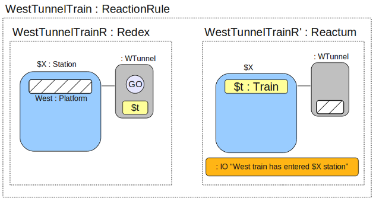

<html>
<head><title>Lope Programming Language - Design and Rationale</title</head>
<style>
pre { background: rgb(225,225,225); padding: 8px; }
</style>
<body>
<h1>Lope Programming Language</h1>

<h2>Introduction</h2>

<strong>Note:</strong> <em>This document describes a planned programming language, but will also eventually serve as a tutorial or reference of sorts.  As a result, anywhere where the writing suggests that Lope does something, mentally replace it with "will do".</em>

<p>Lope is a general-purpose programming language, with a particular emphasis on mobile and distributed systems.  It is loosely based on the <a href="http://www.cl.cam.ac.uk/~rm135/uam-theme.html">Bigraphs</a> formalism, and owes an ideological debt to the <a href="http://www.itu.dk/research/theory/bpl">Bigraphical Programming Languages</a> project.</p>

<p>The fundamental unit of computation within Lope is the <em>reaction</em>.  A reaction is expressed as a rule of the form <em>r --> r'</em>, where <em>r</em> is the <em>redex</em> and <em>r'</em> the <em>reactum</em>.  This corresponds to the rule <em>if any part of the system matches the pattern defined by r, replace it with r'</em>.  This is suitably powerful to express many kinds of computation.</p>

<p>A "program" in Lope consists of three parts:
<ul>
<li>An initial state for the system, defined as a <a href="#bigraph">Bigraph</a>.<li>
<li>A set of <a href="#reactionrules">reaction rules</a>, which are also expressed as Bigraphs.</li>
<li>An <a href="#execution">Execution Plan</a>, which defines the environment in which the program will execute</a>.</li>
</ul>

<p>In understanding Lope, it is important to remember that while bigraphs are primarily a <em>modeling</em> formalism, Lope attempts to permit modeling while remaining, in essence, a <em>programming</em> language.  For this reason, pragmatics are given precedence over theoretical concerns where any conflict should arise between the two.</p>


<a name="bigraph"></a><h2>Bigraphs</h2>

<p>A bigraph is essentially two graphs that share a set of nodes.  The <em>place</em> graph defines a tree that is the nesting of nodes.  A node may contain other nodes and so on to any arbitrary depth, for example:</p>


<p>This corresponds to a tree, as shown below:</p>


<p>Lope extends the bigraphical notion of a place-graph with a concept of an implied "World" node that is the super-node of all nodes in the system. The purpose of this World node will be described later.</p>

<p>The second graph within a bigraph is the <em>link</em> graph.  This defines connectivity between nodes.  Links are bidirectional and may cross node boundaries.  More unusually, the link graph is a <em>hypergraph</em>, so a link may connect more than two nodes:</p>


<p>Combining the two graphs, we get a visual representation of a bigraph:</p>


<p>At this point we begin to diverge from the theory of bigraphs.  Whereas bigraphs have a much refined notion of <em>inner names</em> and <em>outer names</em>, we use language-based features to control composition of bigraphs in a much cruder way, and as such we do not require this distinction.</p>

<p>Another bigraphical concept of significance for Lope is the existence of <em>sites</em>.  A site is a kind of meta-node that permits another bigraph to be substituted in its place.  The crossed white areas in the following example are the two sites in this bigraph:</p>


<p>The final concept of some importance is <em>sortings</em>.  Because Lope is fundamentally a <em>programming</em> language, we will revert to the more familiar (though possibly less-accurate) term <em>types</em>.  A node can have a type, which we indicate using a syntax like: <em>name : type</em>.</p>

<p>While we are using entirely graphical representations here, a textual syntax for Lope will be introduced in a later section.</p>

<a name="reactionrules"></a><h2>Reaction Rules</h2>

<p>A reaction rule has a left hand side (a <em>redex</em>) and a right hand side (a <em>reactum</em>), which indicates that in the presence of a match with the "pattern" defined by the left hand side, the matching part of the system should be replaced with the right hand side.  We also extend this basic notion of a <em>reaction</em> with the ability to define arbitrary behaviours associated with input and output with a reaction.</p>

<h3>An example</h3>
<p>Given that I spend a lot of time on it, the first example of a bigraph with reaction rules will be a <em>simulation</em> of a small part of the <a href="http://www.tfl.gov.uk/tube">London Underground</a>.  Our simulation will only include three stations, each with an east- and west-bound platform (each of which can accomodate exactly one train at a time).  Keep in mind that this is <em>simulation</em>, not modeling.  Our goal is to be able to output something like:

<pre>
...
West train has left KingsCross station
East train has entered RussellSquare station
West train has entered RussellSquare station
East train has left RussellSquare station
...
</pre>

<p>Each station will have a pre-determined "wait time", and fixed travel times between stations.  This will require a 'timer' mechanism, which I will explain prior to describing the rest of the system.</p>

<h4>Timers</h4>

<p>A timer is a pre-existing component, built using language internals.  It takes two parameters; the interval (in seconds) between events, and the node that should be introduced into the environment when the event fires:</p>


<p>Instantiation of a timer silently introduces some reaction rules into the system.  One of these reaction rules will increment the 't' value once per second.  The other reaction rule is shown below:</p>


<p>The effect of the timer firing is to introduce a new node ('Go') inside the node where the timer has been instantiated.  This result of this is that we can then write a reaction rule using 'Go' to hook into the timer firing:</p>


<p>The "IO" type is another special built-in type.  The environment provides reaction rules for IO nodes, taking their contents, printing them and then removing the IO node once it is processed.  Taking all of this together, the result is that this program will print "Hello" every 15 seconds.</p>

<h4>The System Model</h4>

<p>Having described the function of timers, I now present the first part of our example program - the initial state of the system:</p>


<p>This is an idealised London Underground (largely because it only has three stations, which would make for absurdly short travel times), with one east-bound and one west-bound train only.  The "E" blocks at each end are some sort of mysterious zones into which trains disappear and never come back (otherwise known as 'the rest of the London Underground').  Now we need some reaction rules to give it behaviour!</p>

<h5>Rule 1: WestStationTrain</h5>
<p>This rule allows a train that is in a station to move into an empty tunnel, going west:</p>


<p>Some explanation might be required.  The first thing to notice is that our reaction rule is expressed as a bigraph.  This will come in handy later when we start to dynamically generate new reaction rules and modify our existing rules.  Second, notice that we leave out a lot of information from the original model.  We only need to include enough information to obtain a match, and only enough to allow us to access (and manipulate) the nodes that are of interest to us.  Anything that is matched in the redex will be replaced with the reactum, leaving anything that was not mentioned in the redex untouched.  The effect of matching something in the redex and not mentioning it in the reactum (as we do with our timer signal, <em>GE</em>) is to delete it.</p>

<p>This rule relies on the timer behaviour described earlier.  It will not fire until the timer reaction rules place a "GW" node inside the current node, at which point the train is allowed to leave the station.  If the GE node is absent, or if the tunnel is not empty, the train will not be allowed to leave the tstation.</p>

<h5>Rule 2: WestTunnelTrain</h5>
<p>This rule allows a train to move from a tunnel into an empty station once the tunnel timer fires.</p>



<p>The <em>$X : Station</em> and <em>$t : Train</em> syntax is a way of matching on types in reaction rules.  <em>$X : Station</em> will match <em>any</em> node of type <em>Station</em>, and $X any subsequent occurences of $X in the reactum will be replaced by the matched node.</p>

<p><strong>Note:</strong> The way in which the "IO" node is used in these examples is something of an over-simplification so as to keep the graphical notation readable and simple.  The exact graphical representation of IO elements will be explained after the textual representation of Lope programs is introduced.</p>

<h5>Rule 3: WestTerminateTrain</h5>

<p>We need one final rule, which dictates that a train that reaches the end of the line disappears into nothingness, and then reappears back at the other end of the line in the same instant (i.e. trains wrap around).</p>


<p>Obviously we have only encoded rules for traveling in one direction (west).  We would need to construct rules for east-bound trains in much the same way.  The introduction of a textual description will allow us to produce a fully parameterised version of this same program, where a single rule can suffice to describe the behaviour of both east- and west-bound trains.  For argument's sake, assume we have manually constructed the corresponding set of rules for east-bound trains.</p>

<h2>What's the point?</h2>

<p>Hopefully the graphical representations and examples have given you you some sense of the "flavour" of Lope programming.  There are a few reasonably interesting observations we can make at this point:

<ul>
<li>Pretty much everything is a lope-style bigraph.  This vaguely corresponds to the Lisp-esque idea of code-as-data, however I like to think that this goes further while still making it reasonably easy to mentally store a model of the system.</li>
<li>These graphical representations should be reasonably straight-forward to generate programmatically from program text, which might prove a useful aid in debugging and general system documentation and understanding.  Similarly, for fans of visual programming languages, it should be possible to go the other way as well.</li>
<li>There is a very vague hint of logic programming flavour mixed in here.  I haven't yet thought a lot about what the implications of this might be, but I think it could be an interesting direction.</li>
<li>It is possible to encode something like the Lambda calculus inside these Lope-style bigraphs in a reasonably straightforward way.  Similarly, it should be reasonably evident that having done that, there would be no barriers to implementing the entire expression language (e.g. arithmetic, strings, lists etc) as nodes within a bigraph, with corresponding evaluation rules.</li>
<li>Code generation and compilation could be expressed as bigraphs too.  My hope is to implement a self-hosting Lope.</li>
<li>Because we have both locality and connectivity information, it becomes easier (although not necessarily 'easy') to derive parallel and distributed code from Lope programs.  Processes can be truly mobile and context-aware with no extra work.</li>
<li>Because bigraphs have a strong mathematical formalism, providing I haven't broken too many rules in changing my interpretation of a bigraph, it should still be possible to do all the sorts of verification and safety-checking that is possible within the theory of bigraphs.</li>
<li>This all looks very dynamic, but it's actually not.  I'd like to investigate the possibility of making a theorem prover available to the compiler so as to verify optimisations and do static elaboration of various constructs.  If this works, then it should be possible to do verified optimisations and generate reasonably efficient native code.</li>
<li>Failure tolerance becomes reasonably straightforward - you create a reaction rule that matches against certain types of "brokeness" that you can deal with, and then that rule updates other reaction rules (and possibly the bigraph too) to work around that brokeness.</li>
<li>Context-aware services are simple!  You setup some context-defining reaction rules that check for the presence of a certain set of conditions in the current context and then configure all of the other reaction rules appropriately (e.g. adding or removing certain functionality, or emulating unsupported functionality using other features available in the current context).</li>
</ul>

<h2>Textual Representation</h2>

<p>Because almost everything in Lope is a bigraph, the textual representation is primarily geared towards representation and construction of bigraphs.</p>

<h3>Bigraph Creation</h3>

<p>A bigraph is a first-class object.  The anonymous empty bigraph is represented by:</p>

<pre>
{}
</pre>

<p>A bigraph can be anonymous or named:</p>

<pre>
{ {}; } 		// An anonymous bigraph that contains only the empty (anonymous) bigraph.
A { B; }	// A bigraph named "A" that contains another (empty) bigraph named "B"
</pre>

<p>Named parameters become 'sites' within the bigraph.  They appear in the parameter list without a '$' delimeter, and within the body of the bigraph with a '$' delimeter:</p>

<pre>
A (x,y) {
	$x;
	B($y);
};
</pre>

<p>The treatment of types may be somewhat unfamiliar to users of other programming languages.  A type annotation may be attached to any name or value:</p>

<pre>
B(l : string) {
	C($l);
}

A : SomeType (x : int, y : string) {
	$x;
	B($y);
}
</pre>

<p>Lope features strong typing and type inference.  In this case, the type of the parameter to B will be enforced (e.g. passing an integer would be an error).  It is possible to leave type annotations off terms where the type can be reconstructed unambiguously:</p>

<pre>
B(l) {
	C($l);
}

A : SomeType (x, y) {
	$x;
	B($y);
}

A(10,"abc");
</pre>

<p>A limited form of polymorphism is available - the implementation of this would be familiar to ML users.  Basically, where no type constraints are placed upon a parameter, it will be generalised to a type variable (<em>'a, 'b, ...</em>) which acts as a 'place holder' for exactly one type.  For example:</p>

<pre>
PolymorphicBigraph (x,y) {
	$x;
	$y;
}
</pre>

<p>The type of <em>PolymorphicBigraph</em> will be <em>'a * 'b -> PolymorphicBigraph {'a; 'b}</em>.  The '*' notation describes a tuple of values, that is, the type of <em>(x,y)</em> is <em>'a * 'b</em>.  The arrow (<em>-&gt;</em>) is used to separate inputs from outputs (the input is on the left hand side, and the output type is on the right hand side).  So far, this is all ordinary ML-style type notation.  The output type, however, is unlike anything seen in ML.</p>

<p>Because we have not provided a type annotation for <em>PolymorphicBigraph</em>, a new, unique type is automatically instantiated for it (<em>PolymorphicBigraph {a; b}</em>).  The only value that inhabits this type is <em>PolymorphicBigraph</em> itself.  The final piece of notation (<em>{'a; 'b}</em>) indicates the internal structure of PolymorphicBigraph as it is now.  <em>PolymorphicBigraph {int; string}</em> would be a valid instantiation to concrete types (i.e., the instantiated type may be substituted for the uninstantiated type in all cases - they the the same type in some sense), however <em>PolymorphicBigraph {'a; 'b}</em> is a distinct type from <em>PolymorphicBigraph {'a; 'b; 'c}</em>.</p>

<p>While no computation on types is permitted (i.e. dynamic 'reflection-style' features are forbidden), there is a simple mechanism for using the types of bigraphs within other type expressions:</p>

<pre>
OtherBigraph (p,q) {
	$p;
	$q;
} : PolymorphicBigraph.type
</pre>

<p>This is purely syntactic sugar for writing the type <em>'a * 'b -&gt; PolymorphicBigraph {'a; 'b}</em> in full.  It is enforced at compile time, and if PolymorphicBigraph is subsequently updated (to <em>PolymorphicBigraph {'a; 'b; 'c}</em>, for example), <em>OtherBigraph</em> will retain the original type.</p>

<p>There are a few standard values that are accessible on all bigraphs (<em>---&gt;</em> just means 'evaluates to' in this context, and is not a Lope construct):</p>

<pre>
pb = PolymorphicBigraph("x",123);

pb.name ---> "pb"
pb.type ---> PolymorphicBigraph {string; int}
pb.child1 ---> "x" : string
pb.child2 ---> 123 : int
pb.child1.name ---> "" : string
</pre>

<p>These are essentially just macros, and are not modifiable.</p>

<h3>Links</h3>

<p>Links can be named or anonymous:</p>

<pre>
station : Station (intervalW, intervalE) &lt;wTL,wTR,eTL,eTR&gt; {
	Timer($intervalW, GW};
	Timer($intervalE, GE};
	$West;
	$East;
}

tunnel : Tunnel (travelTime) &lt;L,R&gt; {
	Timer($travelTime);
	$tunnelTrain;
}

Underground {
	E &lt;westLine,eastLine&gt;;
	KingsCross = station(30,25);
	wt1 = tunnel(10);
	et1 = tunnel(15);
	RussellSquare = station(25,45);
	wt2 = tunnel(30);
	et2 = tunnel(25);
	Holborn = station(15,20);
	W &lt;westLine,eastLine&gt;;

	link E - KingsCross&lt;wTR,eTR&gt;;
	link KingsCross&lt;wTL&gt; - wt1&lt;R&gt;;
	link KingsCross&lt;eTL&gt; - et1&lt;R&gt;;
	link wt1&lt;L&gt; - RussellSquare&lt;wTR&gt;;
	link et1&lt;L&gt; - RussellSquare&lt;eTR&gt;;
	link RussellSquare&lt;wTL&gt; - wt2&lt;R&gt;;
	link RussellSquare&lt;eTL&gt; - et2&lt;R&gt;;
	link wt2&lt;L&gt; - Holborn&lt;wTR&gt;;
	link et2&lt;L&gt; - Holborn&lt;eTR&gt;;
	link W - Holborn&lt;wTL,eTL&gt;;
}
</pre>

<p>While the example above uses <em>named</em> links, for our purposes we do not need them, so the example is presented again using anonymous links.  The behaviour of the <em>link</em> keyword differs for anonymous links.  The standard syntax <em>link Bigraph1 - Bigraph2</em> will link the first <em>n</em> links together, where <em>n</em> is the smaller number of unconnected links on either bigraph.  The effect of adding a subscript (e.g. <em>link Bigraph1&lt;2&lt; - Bigraph2</em>) is to limit the value of $n$.</p>

<pre>
Underground {
	station : Station (intervalW, intervalE) &lt;4&gt; {
	        Timer($intervalW, GW};
	        Timer($intervalE, GE};
	        $West;
	        $East;
	}

	tunnel : Tunnel (travelTime,direction) &lt;2&gt; {
	        Timer($travelTime);
	        $tunnelTrain;
	}

	train : Train (direction) {
		$direction;
	}

        E &lt;2&gt;;
        KingsCross = station(30,25);
        wt1 = tunnel(10,West);
        et1 = tunnel(15,East);
        RussellSquare = station(25,45);
        wt2 = tunnel(30,West);
        et2 = tunnel(25,East);
        Holborn = station(15,20);
        W &lt;2&gt;;

        link E - KingsCross;
        link KingsCross<1> - wt1;
        link KingsCross<1> - et1;
        link wt1 - RussellSquare;
        link et1 - RussellSquare;
        link RussellSquare&lt;1&gt; - wt2;
        link RussellSquare&lt;1&gt; - et2;
        link wt2 - Holborn;
        link et2 - Holborn;
        link W - Holborn;

	// Insert our trains into the platform sites.
	KingsCross.West = train (West);
	Holborn.East = train (East);
}
</pre>


<h3>Reaction Rules</h3>

<p>Reaction rules are just bigraphs, and so their specification mostly follows from the syntax already used up to this point.  The only difference is that we provide a convenience <em>reaction</em> keyword that provides a cue to those reading Lope programs that there is additional behaviour associated with these particular bigraphs.</p>

<pre>
reaction WestStationTrain { 
	redex { _ : Station { 
			GW;
			$tr : Train
		} &lt;-&gt; _ : Tunnel {
			West;
			{}
		}
 	} 
	reactum { _ : Station {
			{}
        	} &lt;-&gt; _ : Tunnel {
			West;
			$tr
	     	}
	}
}

</pre>

<p>The 'X &lt;-&gt; Y' link operator is a convenience shorthand for 'link X<1> - Y', indicating that there exists a link between the bigraphs on the left and right hand side.  The wildcard ('_') may be used in place of explicit variable-based matching where it is unambiguous to do so.  Ambiguous use of wildcards will result in a compile error.  Use of wildcards is unambiguous if the same types appear in the same nested order, for example:</p>

<pre>
redex:
_ : X {
	_ {
		_ : Z {}
	  }
}

reactum:
_ : X {
	Foo;
	_ {
		_ : Z {}
	  }
}
</pre>

<p>Reaction rules are parameterisable just as any other bigraph is, so we can rewrite this example to be generic for any direction of travel, and then we can instantiate the rule for east-bound and west-bound trains:</p>

<pre>
StationTrain (direction) { 
        redex { _ : Station { 
                        GW;
                        $tr : Train { $direction }
                } &lt;-&gt; _ : Tunnel {
                        $direction;
                        {}
                }
        } 
        reactum { _ : Station {
                        {}
                } &lt;-&gt; _ : Tunnel {
                        $direction;
                        $tr
                }
        }
}

reaction WestStationTrain (West);
reaction EastStationTrain (East);
</pre>

<h2>General-Purpose Programming Examples</h2>

<p>So far the running example has been a simulation task, which ignores some of the programming-in-the-small features of Lope.  This section will contain a series of traditional general-purpose programming tasks and data structures encoded in the Lope style.  First though, we introduce an additional construct that provides a useful short-hand:</p>

<pre>
fun f x = E
fn x => E
</pre>

<p>The effect of <em>fun</em> is a little subtle.  While it is supposed to provide a very familiar notion of introducing a function named 'f' into the current environment, its real effect is to introduce a specialised type and corresponding reaction rules.  You can assume that there is an encoding of something corresponding to the Lambda-calculus inside Lope, and the 'fun' keyword is a means of hiding this complexity and avoiding the need for the programmer to deal with binding and scope rules.  In brief, a function like:</p>

<pre>fun addTwo x = x + 2</pre>

<p>Actually decomposes into a bigraph:</p>


<p>Application of the function (e.g. <em>f(10)</em>) is also a bigraph, with an accompanying reaction rule:</p>


<p>The reaction rule for applied functions is invoked at that point and appropriate substitution happens, allowing eventual reduction to a result:</p>


<p>So after all the rules have been applied, a single bigraph that wraps the result of evaluating the function application is left in the same context as the original function application.  In real implementation terms, we may "hard code" reaction rules for arithmetic operations and such in order to make use of built-in hardware functionality more efficiently.</p>

<p>There is a little bit of trickery going on to do with primitive types (e.g. int, string, real and tuple types etc).  Everything in Lope is a bigraph, but sometimes it is convenient to be able to refer to a boxed value (such as an int) within arithmetic expressions without having to manually unbox the value.  For primitive types only, a bigraph containing only a single primitive value will be coerced to the type of that primitive value where appropriate.  For example, <em>MyIntValue { 32 } + 10</em> is equivalent to <em>32 + 10</em> for all intents and purposes.</p>

<h3>Pattern Matching</h3>

<p>We also allow pattern-matching using the same syntax as in redexes - pattern matching actually just introduces a reaction rule for each clause.</p>

<pre>
fun fact 0 = 1
  | fact n = n * fact (n-1)

fun treeSum {} = 0
  | treeSum (tree { left{y}; v; right{z} }) = v + treeSum y + treeSum z
</pre>

<h3>Lists</h3>

<pre>
List {
	Nil;

	Cons (h,t) {
		($h,$t)
	};

	fun append Nil l = l 
          | append (Cons{(h,t)}) l = Cons(h,append(t,l));

	myList = append([1,2,3],[4,5,6])
}
</pre>

<h3>Prime Sieve</h3>

<pre>
Primes(n) {
	range(Canditate,2,$n);	// Built-in, generates nodes below this one for each value 2..$n as Candidate(2), Candidate(3) etc.


	Filter(p) = { redex {
				Candidate($c) where ($c mod $p = 0);
		      }
		      reactum { }
	}


	PrimeSelect = { redex {
				Candidate($x); 
				$this
			} 
			reactum {
				Prime($x);
				reaction Filter($x);
			} 
		      };

	reaction PrimeSelect;
}

</pre>


</body>
</html>
